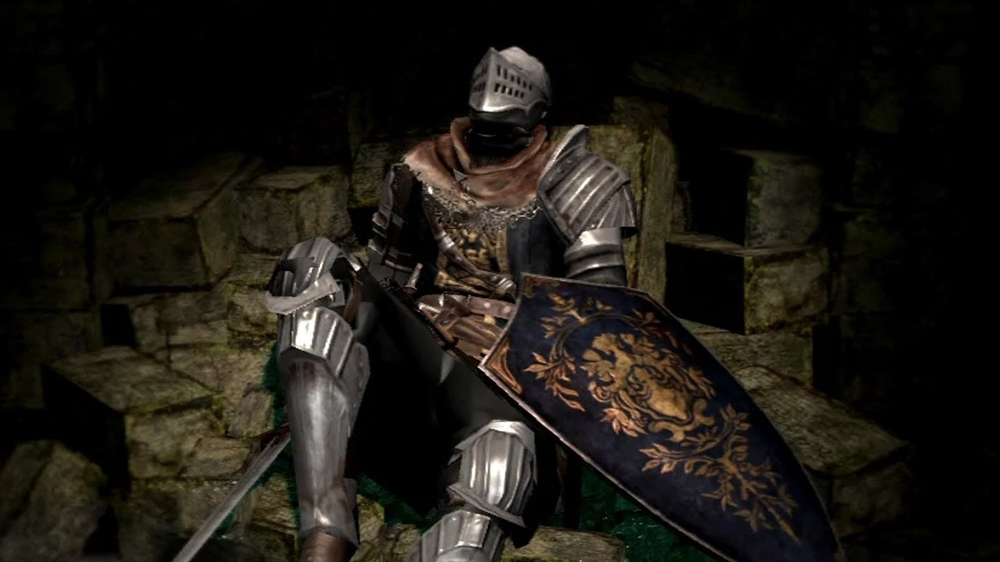

Dark Souls, The Beginning..

The Story..
A lot of events happen before you even begin your adventure in Dark Souls.
Ages before you escape the Undead Asylum, there was nothing but fog.
No one lived, no one died. Only dragons existed, eternally watching over everything.
This era was called the Age of the Ancients...
Underground, a magical fire, called the First Flame, suddenly sparked, attracting many humanoid creatures.
This legendary Flame created the dichotomies between light and dark, and life and death.
Essentially, it put time in motion. Three creatures went into the Flame and claimed a Lord Soul.
Gwyn took the Lord Soul of Light, while the Witch of Izalith took the Soul of Life. Nito claimed the Soul of Death.
This granted them great power, turning them into living gods.
Meanwhile, the Furtive Pygmy found the Dark Soul, which provided Hollows with a precious thing called Humanity.
Thus, humans were born unto this world, but their power paled in comparison to the three Lords.
With this newfound power, the three Lords waged war against the dragons above ground so they could claim the surface.
Unfortunately, these dragons were unable to be killed by normal means.
One dragon, Seath the Scaleless, betrayed his kind because, as you'd guess from his name, he was born without scales.
He reveals to the Lords that dragons are immortal as long as they have their stone scales.
However, the destructive power of lightning could strip them of their defenses.
So Gwyn harnessed some lightning bolts, opening the path for the other two Lords to secure victory.
Nito released the plague of death upon the vulnerable dragons. Meanwhile, the Witch of Izalith burned their homes, so they would have nowhere to run.
This series of events wiped out almost all the dragons in the world, leaving only weaker imitators, like drakes and wyverns.
The only true dragon remaining was Seath. Thus, the Lords moved to the surface, claiming it for themselves.
Backstory..
"In the Age of Ancients, the world was unformed, shrouded by fog. A land of gray crags, Archtrees and Everlasting Dragons.
But then there was fire, and with fire came disparity. Heat and cold, life and death, and of course, light and dark.
Then from the dark, they came, and found the Souls of Lords within the flame.
Nito, the first of the dead,
the Witch of Izalith, and her Daughters of Chaos,
Gwyn, the Lord of Sunlight, and his faithful knights,
and the furtive pygmy, so easily forgotten.
"With the Strength of Lords, they challenged the Dragons.
Gwyn's mighty bolts peeled apart their stone scales.
The Witches weaved great firestorms.
Nito unleashed a miasma of death and disease.
And Seath the Scaleless betrayed his own, and the Dragons were no more.
"Thus began the Age of Fire. But soon, the flames will fade, and only Dark will remain.
Even now, there are only embers, and man sees not light, but only endless nights.
And amongst the living are seen, carriers of the accursed Darksign."
"Yes, indeed. The Darksign brands the Undead.
And in this land, the Undead are corralled and led to the north,
where they are locked away, to await the end of the world.
... This is your fate."
The Bosses
Asylum Demon

Bell Gargoyle

Capra Demon

Ceaseless Discharge

Centipede Demon

Chaos Witch Quelaag

Crossbreed Priscilla

Dark Sun Gwyndolin

Demon Firesage

Gwyn Lord Of Cinder

Iron Golem

Moonlight Butterfly

Nito

Ornstein & Smough.jpg

Pinwheel

Seath the Scaleless>

Stray Demon

Taurus Demon

Bed of Chaos